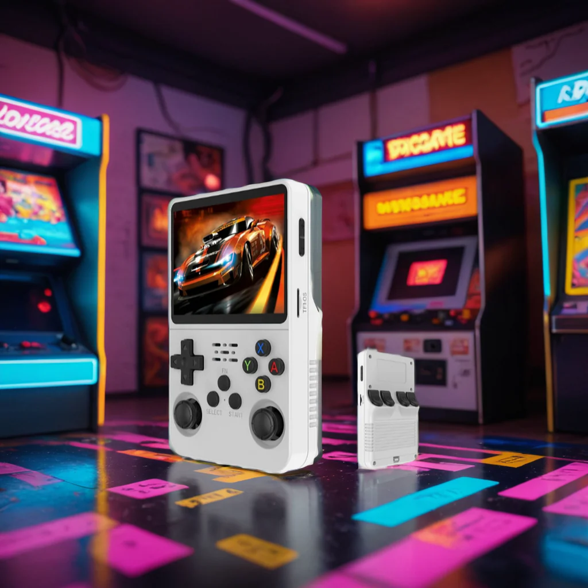
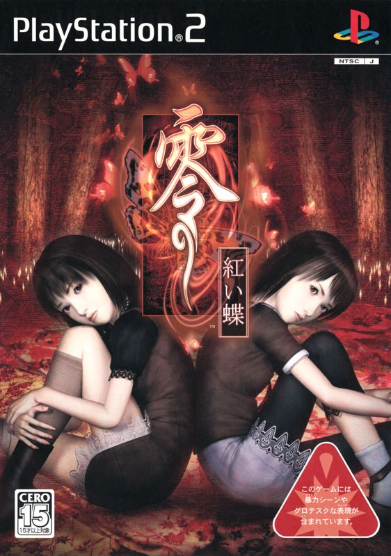
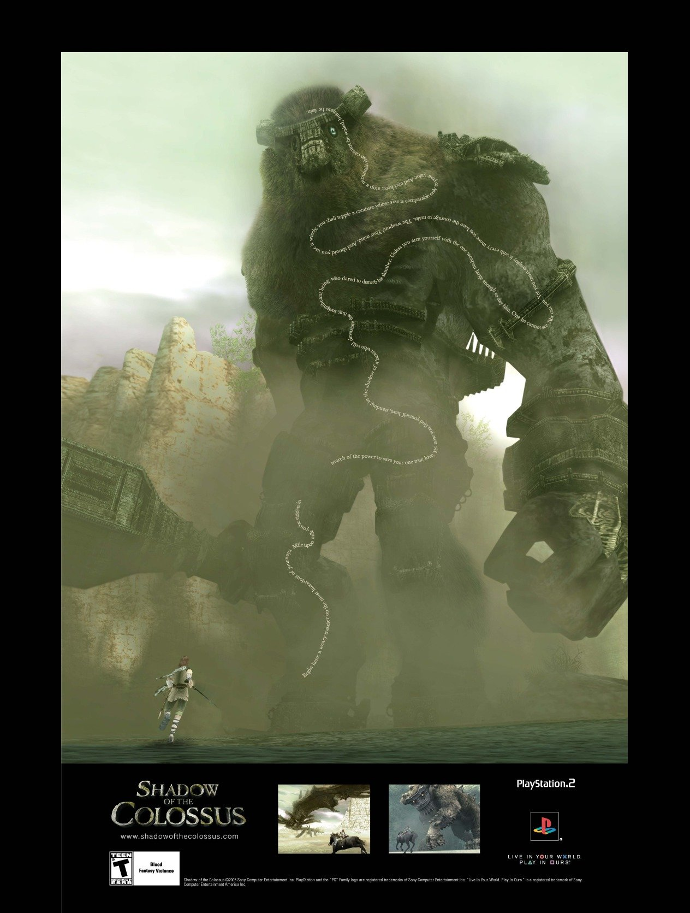
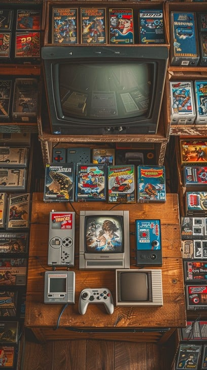
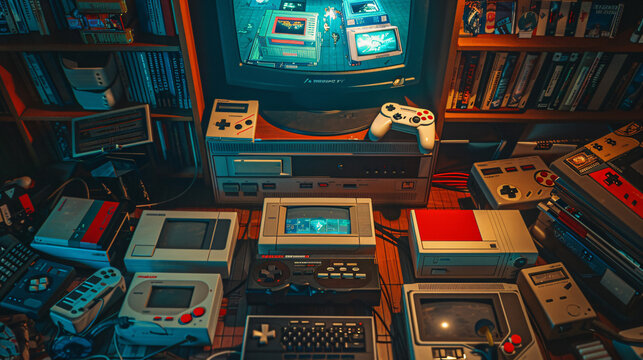
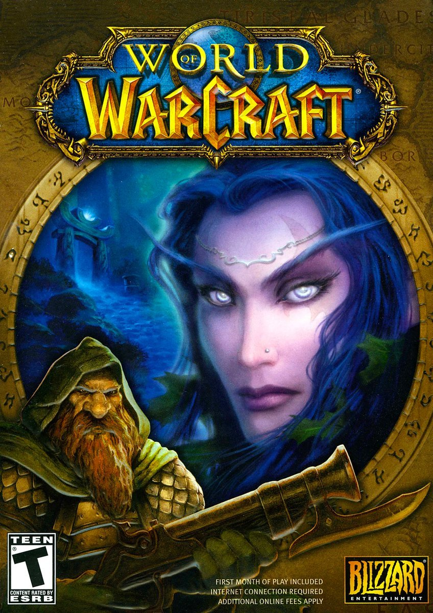

¿Qué es RetroGames?
Los juegos retro son videojuegos que evocan nostalgia, ya sea porque son títulos antiguos o juegos modernos diseñados con una estética clásica. Estos juegos a menudo reflejan el estilo, los gráficos y las mecánicas de juego de generaciones anteriores, desde las eras de 8 bits y 16 bits hasta los clásicos de las arcades de los años 70, 80 y 90. Los juegos retro nos traen de vuelta la magia de tiempos más simples y nos recuerdan las raíces de los videojuegos modernos.





